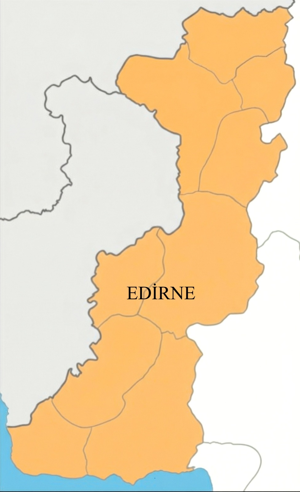
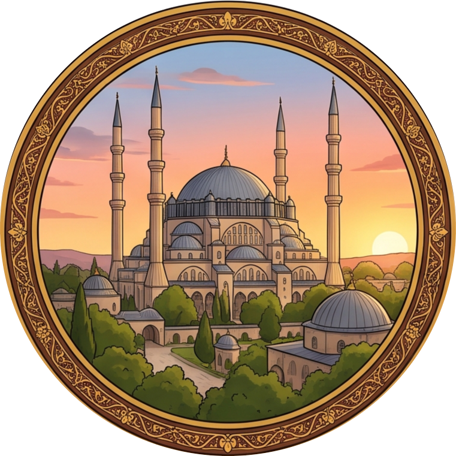
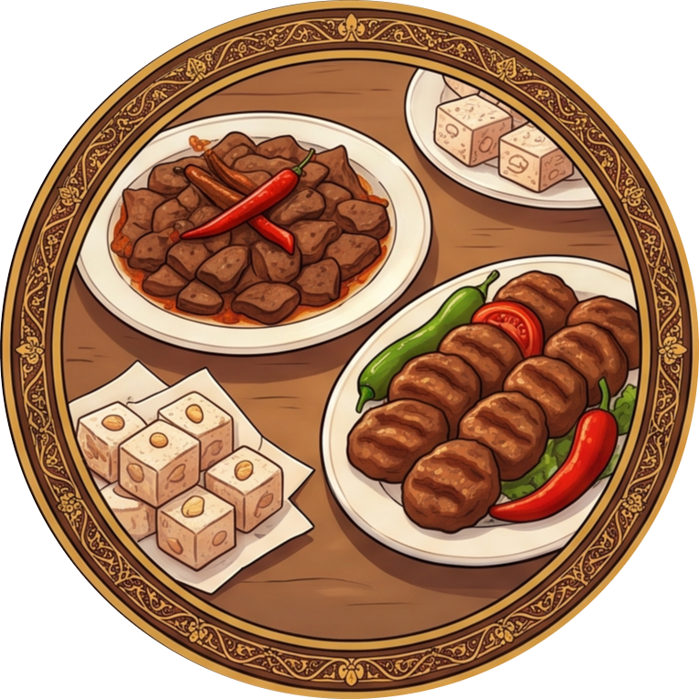
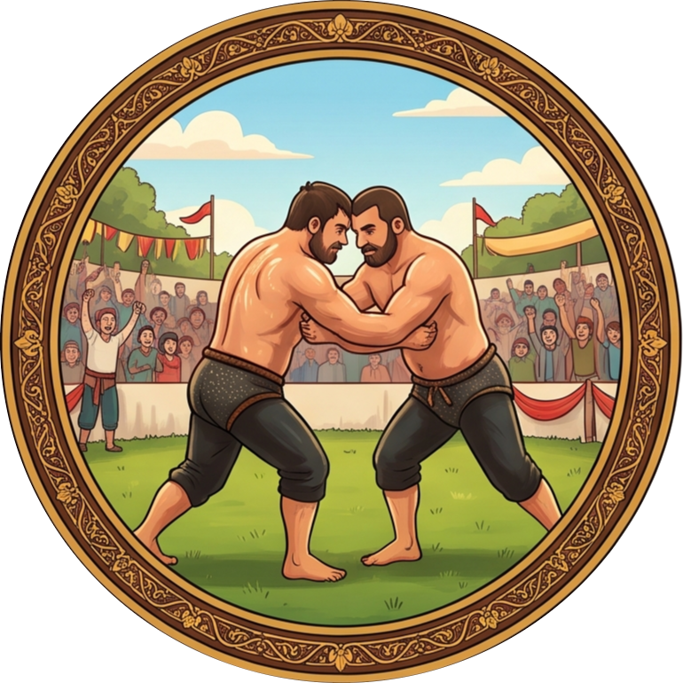
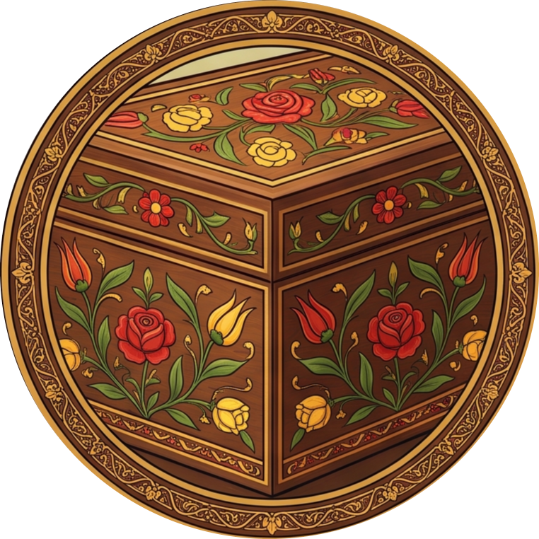

Edirne'nin Kültürel ve Doğal Zenginlikleri
Ana Sayfa
Haritadaki ikonlara tıklayarak eski başkentimiz Edirne'nin eşsiz tarihini, lezzetlerini ve geleneklerini keşfedebilirsiniz. 🌻

Selimiye Camii

Edirne Lezzetleri

Kırkpınar Güreşleri

Edirnekâri Sanatı
